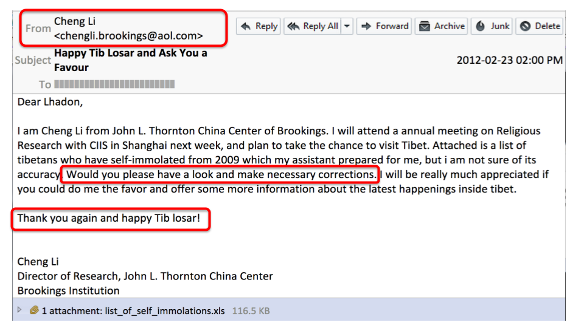
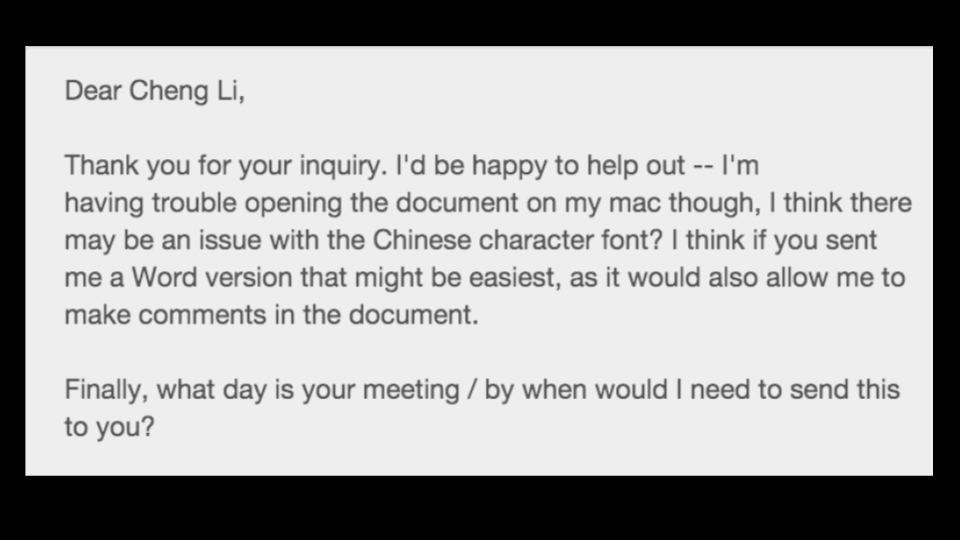
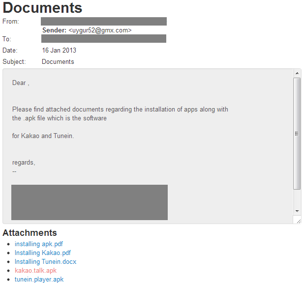
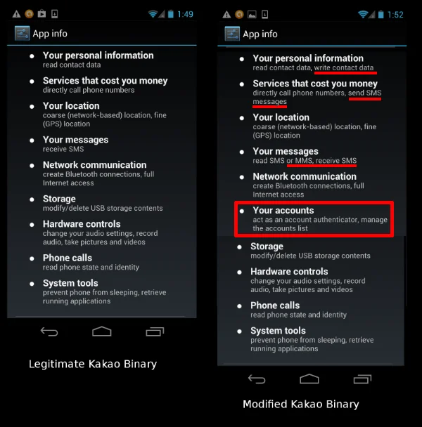

I. Introduction
In many ways, the Tibetan community has been under constant attack ever since coming into exile in 1959. This report seeks to examine the ways in which attacks and threats have evolved in today’s digital age starting from approximately 2002 and spanning roughly twenty years.
Since Tibet’s illegal occupation by China from the early 1950s onwards, Tibetans inside Tibet have resisted and this resistance continues today. Since His Holiness the Dalai Lama was forced to flee from Lhasa in March 1959 and live in exile in India, the Tibetan exile community that has grown into hundreds of thousands of people have been continuing resistance and vocally opposing China’s rule at the grassroots and advocacy level. The global recognition for the Dalai Lama, the resistance activities led by Tibetans both inside and outside Tibet, the activities of the Tibetan Government in Exile (Central Tibetan Administration) as well as a worldwide Tibet network of Tibet Support Groups are a constant obstruction to the Chinese government’s efforts for full control over Tibet and a threat to China’s reputation.
This report provides a first of its kind comprehensive overview on the evolution of digital threats to Tibetans in exile and also an account of the resolve to counter these threats and overcome them.
II. Technology and the Tibet Movement
The internet first came to the Tibetan exile capital of Dharamsala in northern India in the mid 1990s. At that time, non-Tibetans, together with the Tibetan Computer Resource Centre, helped the exile government to set up an Internet-connected Local Area Network between all 7 ministries, the Kashag, Library of Tibetan Works and Archives, and several other offices with dialup connectivity to the Private Office of His Holiness the Dalai Lama, the Norbulingka Institute and other important locations¹Dan Haig - How the internet came to Dharamsala. In 2000, the exile government’s web presence (on Tibet [.] Net) was being established and the network consisted of over 120 computers.
DalaiLama.com webpage from 1999 archived online²Original website archived here: https://web.archive.org/web/19991013110002/http://dalailama.com/(accessed December 8, 2022)
A digital system and web presence for His Holiness the Dalai Lama started to be established also at around this time. The website DalaiLama.com is recorded as having been registered on December 18, 1996³Source: https://who.is/whois/dalailama.com (accessed December 8, 2022). At that time, monks from the Private Office of His Holiness the Dalai Lama were managing the Office’s email, maintaining databases, hosting the website and managing the content. The Office of His Holiness the Dalai Lama would schedule His Holiness’ meetings with international diplomats and religious leaders around the globe primarily through email.
Outside the Office of His Holiness the Dalai Lama and the Tibetan exile government, like everyone else around the globe, civil society and the worldwide Tibet movement was also going through the experiences brought by the ever changing world of technology. Previously highly regionalized, the Tibet movement started evolving into a globally coordinated one.
One of the earliest documented targeted attacks on the Tibetan community in exile took place in 2002. The Tibetan Computer Resource Centre in Dharamsala which administers the computer system of the Tibetan Government in Exile, through their spokesperson Jigme Tsering revealed in an interview to a UK online news site in September 2002 that there had been repeated attempts to infect the exile government’s computers with malware in order to obtain information.
On September 27, 2002, Tsering issued a statement detailing Chinese attempts to infiltrate the computers of TGIE saying, “A number of targeted computer viruses circulating via email throughout the Tibetan Government-in-exile and Tibetan support groups and related NGOs have been discovered or brought to our attention. These viruses have appeared in a number of variants, indicating a progressive and sustained development process.
For example, some were taking advantage of known security loopholes in Microsoft software in order to automatically run and are always personalized to impersonate departmental emails following previous attempts to collect email address lists. One variant analyzed was found to have been sourced from the Yunnan Province in China,br and was designed to collect information of an infected computer and send it via email to an address in Beijing 4Chinese Internet group found spying on Tibetan government computers”, International Campaign for Tibet, October 28, 2003 .”
III. Digital Threats and Their Origins
The emergence and proliferation of information technology in the Tibetan community in exile has been integral for strengthening the Tibetan movement, expanding communication opportunities, and providing information on Tibetan culture. However, as infrastructure, tools, and knowledge spread through the community, so do online threats perpetrated by groups tied to the Chinese Communist Party (CCP). These groups take advantage of relatively low levels of information security capacity in the Tibetan community to infiltrate the communications ecosystem and monitor groups and individuals. Based on our analysis of public research reports on information security threats observed in the Tibetan diaspora and from testimonies received from targeted organizations and individuals, we were able to uncover the technical and social engineering strategies involved behind the past 20 years of information security threats targeting the Tibetan community. Our understanding of these targeted attacks is also an outcome of our direct experiences and lessons learned through TibCERT's initiatives over the years in supporting numerous Tibetan organizations and individuals regarding the prevention and mitigation of these cyber security threats in the diaspora community.
Ever Since the earliest days of cyber attacks against the Tibetan community were observed over two decades before, the targeted threat landscape has tremendously evolved over the same period. Much of the cyber attacks throughout the years consists of deploying malwares which were carefully crafted with moderate technical sophistication yet consisting of high social engineering tactics mostly used in the form of targeted emails. The majority of the targeted victims of these cyber attacks were Tibetan Non-Governmental Offices (NGOs), The Central Tibetan Administration (CTA), Tibetan Activists and Journalists. The prevalent medium/vector of these attacks were in the form of targeted emails consisting of malicious attachments and links, compromising websites through watering hole attacks as well as through 1-Click Mobile Exploits sent via mobile text messages. These attacks were designed to infect all types of prominent OS platforms namely Windows, Mac, Android and iOS devices. One interesting observation in our analysis uncovers the fact that the threat actors were successful in infecting systems repeatedly in their malware campaigns from 2013-2016 by exploiting the same security vulnerabilities of a victim’s system(s) with outdated malwares. The older vulnerabilities exploited by those outdated malwares were already patched by microsoft through their regular security updates. The persistent use of this known and patched exploit indicates that the attackers were still finding success with it in operations against the community, likely due to targets using unpatched systems and possibly unauthentic versions of Windows.
Following through the early days of internet infrastructure development period in the Tibetan diaspora community to the relentless cyber attacks observed ever since, TibCERT has also provided recommendations in strengthening the overall defense and resilience of our community in these regards. It is of grave concern that with the growing awareness of cyber security threats and constantly evolving digital infrastructures within the Tibetan community in diaspora, the threat actors are also raising their efforts and sophistication in unleashing cyber attacks to infiltrate our movement in exile. It is our collective belief that coalition and collaborative efforts in the field of technology and digital security in our community is very essential to keep our Tibet movement one step ahead in the era of digital revolution.
Since the earliest recorded cyber attacks in 2002, Tibetans and Tibet supporters have been under constant attack. These cyber-attacks on multiple fronts aim to target not just individuals in the Tibet movement’s leadership but also the general public and the reasons for them can be to disrupt the movement and its credibility, steal movement-related information and to infiltrate the movement network.
For years, although Tibetans had no doubts that the cyber attacks were coming from China, there was a lack of capacity to carry out extensive research on them and uncover evidence. Therefore it was a challenge to bring global attention to the new front of China’s cyber assault on the Tibet movement. One of the first research reports to expose the inner workings of malware-based cyber espionage with an explicit focus on Tibetans in exile was “Tracking GhostNet: Investigating a Cyber Espionage Network”, published in 2009 by Citizen Lab based at the University of Toronto and The SecDev Group, based in Ottawa, Canada 5 “Tracking GhostNet: Investigating a Cyber Espionage Network" (accessed December 8, 2022). The study revealed the existence and operational reach of a cyber espionage network named “GhostNet”. The investigations began with Tibetan computer systems and ultimately uncovered a network of over 1,295 infected hosts in 103 countries. The targeted malware was sent to Tibetan institutions such as the Offices of Tibet, the Tibetan Government-in-Exile and even to the Office of His Holiness the Dalai Lama. In addition, the investigation looked at a Tibetan NGO called Drewla (sic). The Drelwa Initiative Project based in Dharamsala sought new ways to communicate directly with citizens of the People’s Republic of China online. While the report presented in-depth research of the attacks, it stopped short of naming China as the culprit, the report stated “attributing all Chinese malware to deliberate or targeted intelligence gathering operations by the Chinese state is wrong and misleading.”
In April 2010, a follow up report was published titled “Shadows In the Cloud” which monitored a spy operation called the Shadow Network and demonstrated how it systematically hacked into personal computers in government offices on several continents. The investigation recovered a large quantity of stolen documents, including from agencies of the Indian national security establishment and the Offices of the Dalai Lama 6New York Times, Researchers Trace Data Theft to Intruders in China,[accessed December 16, 2022]. The report analyzed the malware ecosystem employed by the Shadows’ attackers and traced the core servers to being located in China, the attackers staging their operations from Chengdu, Sichuan province.
A subsequent report that firmly traced cyber espionage back to China was by the civil society research group Mandiant (now owned by Google). Their 2013 report “APT1: Exposing One of China’s Cyber Espionage Units 7Mandiant, APT1: Exposing One of China’s Cyber Espionage Units[accessed December 16, 2022]” focused on China’s cyber espionage with targets in the US, Canada, and UK that included governments, international cooperation and development agencies, and multinational corporations. Their investigations tracked this activity back to APT1 or Unit 61398, a bureau under the People's Liberation Army. Mandiant’s findings were also reinforced by Citizen Lab 8 Citizen Lab, APT1’s GLASSES – Watching a Human Rights Organization[accessed December 16, 2022] .
Their report APT1: Exposing One of China’s Cyber Espionage Units released on February 19, 2013, on page 5 clearly stated ‘The nature of “Unit 61398’s” work is considered by China to be a state secret; however, we believe it engages in harmful “Computer Network Operations.”’
Mandiant’s findings were reinforced by Citizen Lab. In their post APT1’s GLASSES – Watching a Human Rights Organization published on February 25, 2013 Citizen Lab stated: “The malicious program analyzed at Citizen Lab shares both a large percentage of code and the same command and control (C2) infrastructure as the program described in the APT1 report. We are calling this program GLASSES because it is related to GOGGLES and uses a compromised eyeglasses storefront website as its C2 server.”
IV. On the Frontlines
In part IV we highlight individuals and organizations who have come under varying forms of digital attack. While some attacks target a person, other types of attacks hack websites or send malware embedded in mobile apps.
Attacks on Individuals

At first I was quite amused that Chengl Li, who is an influential person is actually thinking about Tibet, and is looking out for self-immolations which is a painful, awful issue for all the Tibetans and he is genuinely wanting to help and looking to me for help. My initial feeling that I had was very positive and that was based on the person that was supposedly sending me this email, their profile and their relevance to our work, the importance in the field of at least China kind of analysts, thinkers, experts and also there was some very quick reaction I had that felt glad, positive that such a person would reach out to us and to me at that time. Once I realized pretty quickly that it was suspicious, I thought it was the “happy Tib Losar!” that struck me as not the language that someone like this person was supposedly would use. So very quickly i was suspicious and then also I remembered thinking that this was good, that was well crafted, researched, targeted attack and i wouldn't say I was impressed but maybe my blood ran a little cold recognizing how sophisticated this kind of social engineering to me from what to me there was no question it must be a Chinese government backed attack.
Lhadon Tethong was herself the target of a social engineering attack in 2012, this time carried out over email. By 2012, Lhadon Tethong was the Director of Tibet Action Institute that had been founded in 2009 and the social engineering attack occurred on her Tibet Action Institute official work email. She found herself corresponding with someone claiming to be Cheng Li, a real person at prestigious Washington DC think tank The Brookings Institution, Director of the John L. Thornton China Center and a senior fellow in the Foreign Policy program
On February 23, 2012 Lhadon Tethong received the email supposedly from Cheng Li asking for assistance with a list of 2009 self-immolations which was, in actual fact, a malware infected attachment using the email address chengli [.] brookings [@] aol [.] com.
She was at first pleasantly surprised to receive an email from such a prominent person and as it was the period of news of many self-immolations taking place in Tibet, the premise seemed plausible. Since the self-immolation protests started in Tibet, Lhadon Tethong had been the point of contact for the media and working to make the self-immolation protests in Tibet known to the outside world, particularly at this time in 2012 when self-immolations were at their height. As Tibet Action Institute was specializing in digital security, Lhadon was aware of being a target for attacks so she forwarded the email to The Citizen Lab. When studying the attachment, it was found that the malware contained a Windows based malware. Realizing that hackers were trying to compromise her computer but in order to investigate the depth of the hacker's resources, Lhadon Tethong replied to the email saying that she was having trouble opening the attachment on her Mac computer.

Within 12 days of the first email, on March 6, 2012, she received a reply from the attacker. This time the attacker sent a link that was a refurbished malware for Mac. If she had clicked on the link, the malware would have used the system’s vulnerability to compromise her Mac.
This case shows how a member of the Tibetan Parliament in Exile (TPiE) was a prime target of attackers. The tactics of attackers have also changed and evolved as the malware becomes more sophisticated, specifically designed to infect Android phones, the most used mobile operating system in the Tibetan Community.
TPiE, officially the Parliament of the Central Tibetan Administration, is the unicameral and highest legislative organ of CTA. It is one of the three pillars of Tibetan democratic governance - the Judiciary, Legislature, and the Kashag (Executive). The parliament sessions are held twice a year with an interval of six months, one in March and one in September.
In this instance, a Tibetan Parliamentarian’s email was imitated and used to send a spoofed email to a prominent Tibetan advocate based in the USA. The Parliamentarian may have been targeted for being a member of the monastic community, involved in activism and also as someone who was born and grew up in Tibet.
------------------------- lobsang la video
The spoofed email sent on January 16, 2013, contained an attachment of two APK files, one for KakaoTalk, a South Korean mobile messaging app for Android and one for TuneIn, an app through which Tibetans can listen to Tibetan language radio stations such as Voice of America and Radio Free Asia. Citizen Lab found that the APKs of KakaoTalk and Tunein attached to the email were both altered versions and contained malware if installed. The malicious TuneIn Radio APK added permissions that would allow attackers “to collect the user’s contacts, SMS message history and cellular network location 10Permission to Spy: An Analysis of Android Malware Targeting Tibetans” By Seth Hardy, Byron Sonne, Masashi Crete-Nishihata, Jakub Dalek, Ron Deibert, and Adam Senft, April 18, 2013(accessed March 24, 2023).”
Screenshot of Attack and what permission modified Kakao app request and Major antivirus products result of the modified Kakao app:
The timing of this email was also interesting as KakaoTalk had just been recommended to the MP by Tibet Action Institute’s Lobsang Gyatso Sither then the Digital Security Programs Director due to security concerns about WeChat having been raised. The spoofed email was an exact copy of the original email, the content was the same and the only thing in the email that had been altered was the KakaoTalk and Tunein APK files to contain malware. One other difference was that the sender was not the original Parliamentarian sender (the sender was now uygur52[@]gmx.com) and the recipient was another Tibetan prominent figure.

Upon analysis, Citizen Lab found that the rigged version of KakaoTalk and Tunein used illegitimate certificates that would have prevented it from getting into the Google Play market for Android apps, and required the user to agree to a longer list of permissions 11https://citizenlab.ca/2013/04/permission-to-spy-an-analysis-of-android-malware-targeting-tibetans/. Citizen Lab also tested the Kakao malware against three major antivirus products: Avast, Lookout, and Kaspersky's mobile product. None of the three detected the software as dangerous.

The Kakao sample was the second instance of targeted Android malware to appear in just two weeks. In late March, Kaspersky detected another rigged app APK related to a conference of peoples oppressed by China that had been similarly designed to steal contacts, messages and location data.
An evolution of social engineering attacks has been malware delivered on smartphone devices via WhatsApp. Tibetan institutions and individuals have seen their iOS and Android devices targeted by hacks delivered in WhatsApp messages. With a single click of the link within the WhatsApp chat text, their device would have a permanent tracker installed on it, in some cases, stolen credentials.
Among those targeted by attackers between November 2018 and May 2019 were the offices of the Dalai Lama, the Central Tibetan Administration, Parliamentarians and Tibetan human rights groups. A total of 17 intrusion attempts were made over this period. It is still unclear how the hackers got hold of the targeted individuals, organizations details or contact numbers but the numbers may have been scraped from various websites or social media accounts. All the infection attempts 12 Missing Link:Tibetan Groups Targeted with 1-Click Mobile Exploits” By Bill Marczak, Adam Hulcoop, Etienne Maynier, Bahr Abdul Razzak, Masashi Crete-Nishihata, John Scott-Railton, and Ron Deibert, September 24, 2019(accessed March 24, 2023) were made with careful social engineering tactics where the attacker managed to get the Whatsapp contact number of its targets and seem to have a preconceived notion of who the targeted individual was, in terms of their role and reputation in the Tibetan community in exile.
One of the victims of the 1-Click WhatsApp attack was Lhagyari Namgyal Dolkar. Dharamsala based Lhagyari Namgyal Dolkar is a long time member of the Tibetan Parliament in Exile and headed the prominent non-governmental organization, Gu-Chu-Sum at that time, that advocates for former Tibetan political prisoners for many years. Prior to that she was active with the Tibetan Women's Association so is a well known member of civil society as well as hailing from a prominent Tibetan family.
On the night of November 12, 2018, she received a message in WhatsApp from someone claiming to be the head of Amnesty International by the name “Jason Wu” about a self-immolation protest that had allegedly taken place in Tibet. She was then the President of Gu-Chu-Sum and often received messages from media groups about self-immolation cases that were happening inside Tibet. At first she thought this message was legitimate, afterwards, Namgyal Dolmar felt that there was something suspicious about “Jason Wu” especially because he kept pushing her to click on the link. Instead of clicking on the link, Namgyal Dolkar forwarded the link to TibCERT who, together with Citizen lab, deemed the link as the first series of one-click mobile exploits used against Tibetans.
 Fig : A social engineering attempt with a fake “Jason Wu” persona shows the level of effort put into crafting a plausible deception.
Fig : A social engineering attempt with a fake “Jason Wu” persona shows the level of effort put into crafting a plausible deception.
Later it was found that the link led to code designed to exploit mobile web browser vulnerabilities to install spyware on iOS and Android devices, and in some cases to OAuth phishing pages.
Anyone who was running an up-to-date Android or iOS at the time should’ve been protected from infection. For those who hadn’t updated and were successfully hacked, their WhatsApp and Facebook messages, location, contacts, call and text histories, and emails could have been sent back to the hackers.
Since becoming a voice for Tibet, she has been constantly being targeted with various malicious emails and cyber attacks such as 1-Click Mobile Exploit 12 "Missing Link:Tibetan Groups Targeted with 1-Click Mobile Exploits” By Bill Marczak, Adam Hulcoop, Etienne Maynier, Bahr Abdul Razzak, Masashi Crete-Nishihata, John Scott-Railton, and Ron Deibert September 24, 2019 (accessed March 24, 2023). She was targeted from 2016 and still continues to receive suspicious emails. The email attacks targeting her were also targeted to other Members of the TPiE. The emails contain either a link or a DOC or PPSX attachment that contains malware which could potentially compromise the user’s system and steal data.
In the past, targeted threats were sent through emails with malicious links or attachments to various organizations within the Tibetan exile community. These attacks eventually evolved into targeted website attacks, namely through watering hole attacks. But the November 2018 WhatsApp attacks were the first cases of 1-Click mobile exploits used to target the Tibetan community, showing that operators were changing their tactics in response to the Tibetan community’s awareness campaigns, as well as demonstrating the ongoing digital security challenges Tibetan groups faced. The malware associated with these 1-Click mobile exploits were designed to infect Android and iOS operating systems, indicating that the threat actors were evolving to target mobile devices as well to infect and infiltrate sensitive data from prominent figures in the Tibetan diaspora.
Such different espionage campaigns have an underlying commonality which is to focus on clever social engineering rather than the technical sophistication of exploits or malware. They also overlap with two reported campaigns around similar timelines against Uyghur organizations 14https://citizenlab.ca/2019/09/poison-carp-tibetan-groups-targeted-with-1-click-mobile-exploits/, thus reflecting a growing technical and social engineering sophistication in threats targeting the Tibetan community as well as other groups.